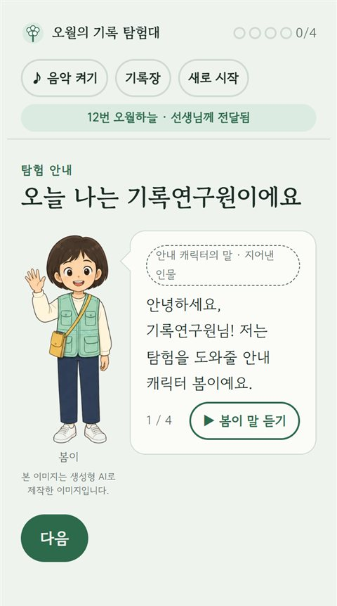
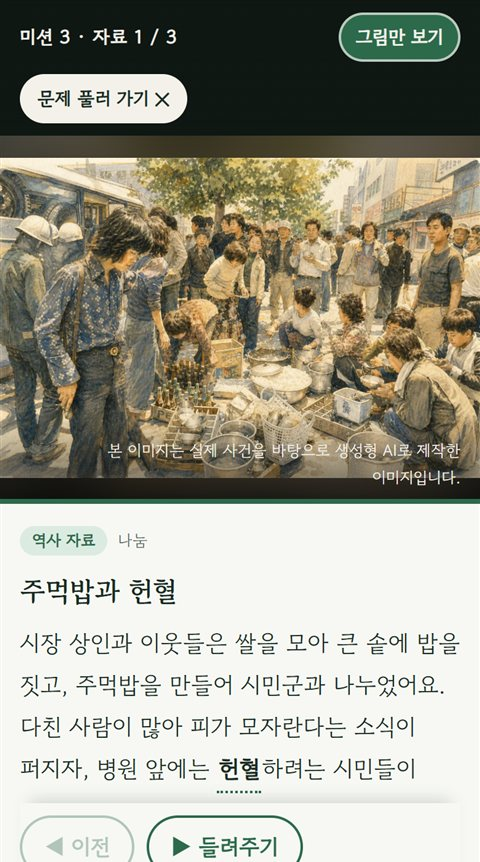
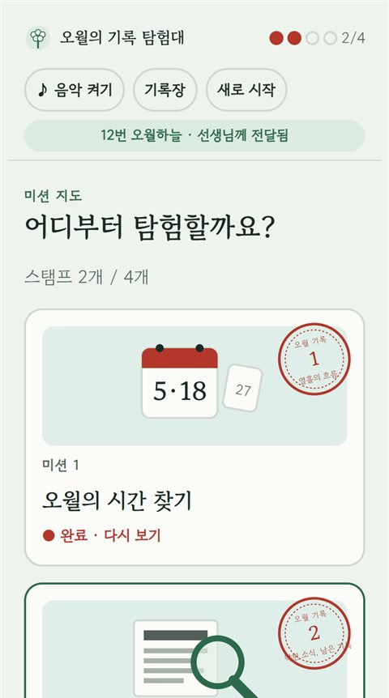
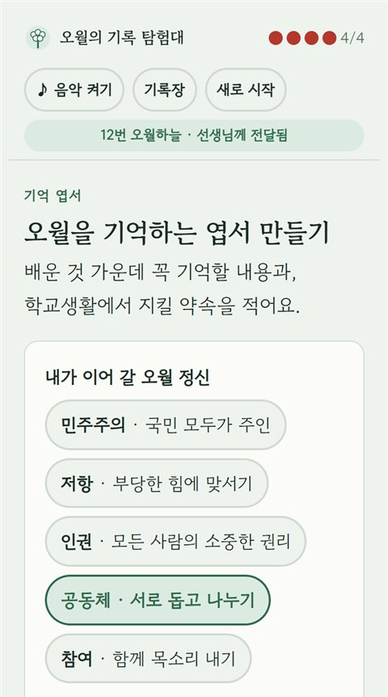
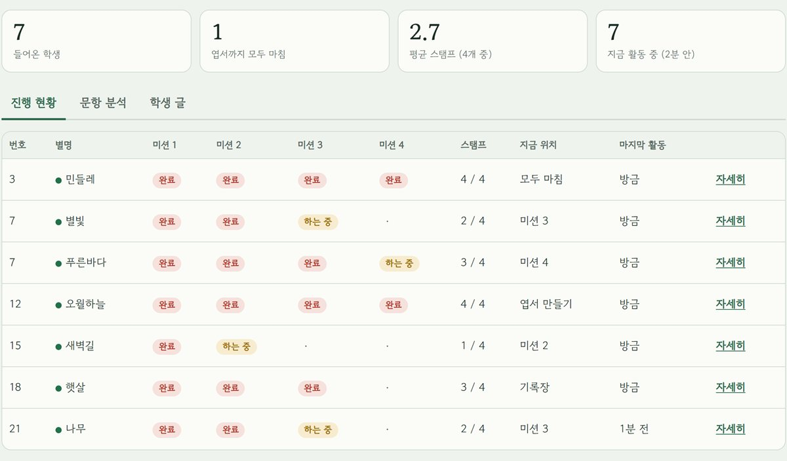

5·18민주화운동 탐구 활동 · 초등 5~6학년
오월의 기록 탐험대
자료 속 단서를 찾아 1980년 5월 광주의 열흘을 따라가고, 나만의 오월 기록장을 완성해요.
학생
휴대폰·태블릿으로 탐험해요




교사
수업을 한눈에 확인해요

- 학급방과 QR반마다 학급방을 만들고 QR을 띄우면 학생이 바로 들어와요.
- 실시간 진행 현황누가 어느 미션에 있는지, 어려워한 문항이 무엇인지 보여요.
- 학생 글과 결과 내려받기생각 쓰기와 엽서를 모아 보고, 결과를 CSV로 저장해요.
학생으로 체험하기
QR을 찍어 직접 체험해 보세요
한 사람은 교사로 학급방을 만들고, 다른 사람은 학생으로 그 학급코드를 넣어 들어가면 진행 상황이 바로 바뀌는 것을 볼 수 있어요.
교사로 체험하기
학생은 실명 대신 별명을 써요. 교사 화면은 구글 로그인이 필요해요. · 그림은 실제 사건을 바탕으로 생성형 AI로 제작한 이미지입니다.